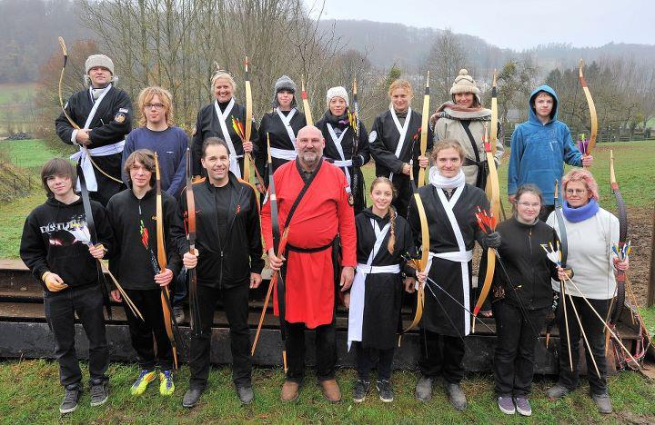
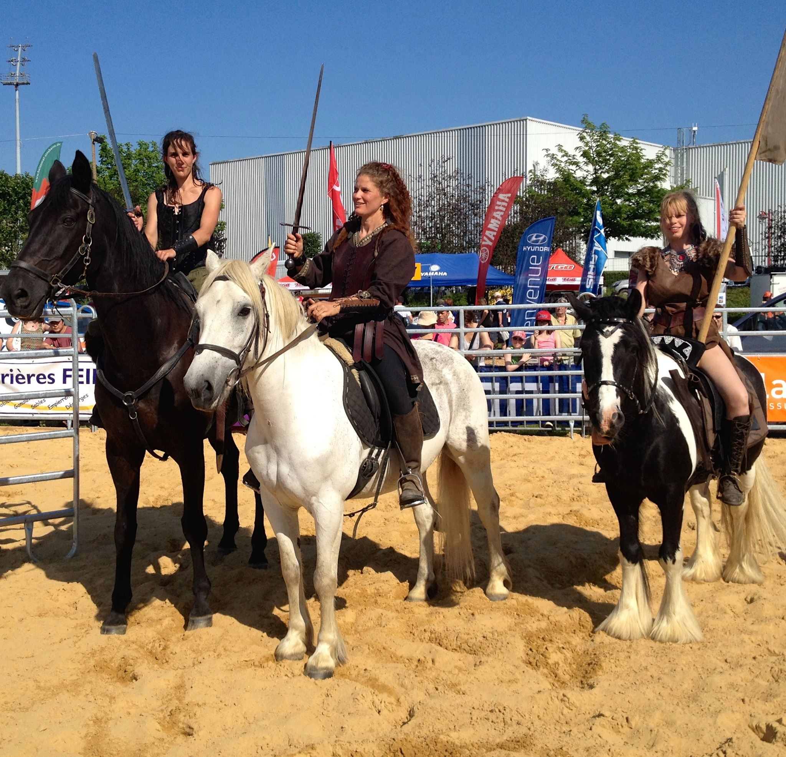
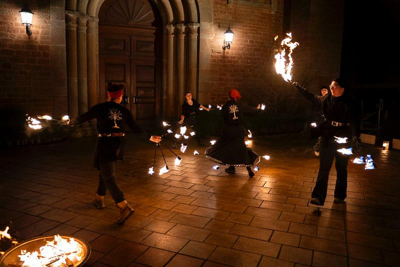

🏹🔥 D'Arc Angels - Lëtzebuerg 🔥🏹
Willkommen bei den D'Arc Angels, dem ersten luxemburgischen Team im berittenen Bogenschießen! Mit Pfeil und Bogen in der Hand und den Hufen unserer Pferde als treue Begleiter verschmelzen wir Geschwindigkeit, Präzision und Tradition zu einem einzigartigen Sporterlebnis.
Seit der Gründung im Jahr 2010 wachsen wir stetig und vereinen Reiterinnen und Reiter, die eine gemeinsame Leidenschaft teilen: Das Pferd als echten Partner in den Mittelpunkt zu stellen und die Kunst des intuitiven Bogenschießens auf ein neues Level zu bringen. Egal ob im Training, bei Turnieren oder spektakulären Shows – die D'Arc Angels stehen für Teamgeist, Hingabe und den unbändigen Willen, über sich hinauszuwachsen!

Der Verein Heute
Seit unserer Gründung haben wir uns stetig weiterentwickelt und sind heute offiziell anerkannt und vernetzt mit einigen der wichtigsten Organisationen im Bereich des berittenen Bogenschießens:
- Mitglied der FLSE Fédération Luxembourgeoise des Sports Equestres
- Mitglied der IHAA International Horseback Archery Alliance
- Teil des Kassai-Systems Eine der renommiertesten Schulen für traditionelles berittenes Bogenschießen
- Enge Freundschaft & Zusammenarbeit mit der Waldrand Ranch Baasem Der Waldrand Ranch Baasem
- Materialbezug & Unterstützung durch Archerie Cheval Arc und demBlackarrowshop

Heute

Damals
Locations
A Leemen
Anne Muller
Um Schlammestee, 5770 Weiler-la-Tour, Luxemburg
Website anne.muller66@gmail.comUnser Team
🔥Die fire Devils 🔥
Aus der Leidenschaft unseres D'Arc Angels-Teams geboren, sind die Fire Devils mehr als nur eine Gruppe – sie sind eine brennende Vision! 🔥 Getrieben von der Liebe zum historischen Reiten, Bogenschießen und epischen Mittelalter-Events, haben sich unsere Mitglieder zusammengeschlossen, um Magie und Feuer zu vereinen.
Mehr über die Fire Devils erfahren
